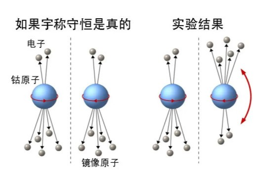

1912年5月31日，吴健雄生于中国江苏省太仓县浏河镇。她是吴仲裔(1888年—1959年）与樊复华的第二个孩子，有一个哥哥和一个弟弟。依族谱，她是家族中的“健”字辈。吴健雄与她兄弟的名字都源于“英雄豪杰”这个熟语。
吴健雄父亲极力培养她的兴趣，为她营造了一个充满书香的家庭氛围。吴健雄在她父亲为女童创办的明德学校接受小学教育，1923年11岁时离开家乡前往苏州第二女子师范学校求学。这所学校是一所寄宿制学校，在教授一般知识的同时提供教育相关的训练。由于不收取教学及住宿的费用且在毕业后会分配工作，因而接受教学相关训练的资格较难获得。尽管她的家庭有支付相关费用的能力，但吴健雄仍选择接受挑战，在一万个申请者中排名第九。
1929年，吴健雄以班级顶尖成绩毕业并被国立中央大学录取。依据当时政府的规定，想要继续获得大学教育的师范生需要当一年的学校教师。在这一年中，她在中国公学任教。吴健雄曾旁听校长胡适讲授的课程。1930年至1934年，吴健雄求学于中央大学，起初主修数学，后来转为主修物理，导师为施士元教授。1934年，吴健雄完成了一篇题为《证明布喇格定律》的毕业论文。中日关系此时非常紧张，学生非常希望当时的国民政府能对日本采取更为强硬的立场，吴健雄也参与到相关的政治活动中，并被选为领导者之一。她所领导的抗议活动包括在时任国民政府军事委员会委员长的蒋中正的办公厅舍静坐，参与活动的学生后来得到蒋中正的接见。她的这一行为后来被当局原谅。尽管在政治活动方面非常积极，吴健雄仍未荒废学业。在本科毕业后的两年期间，吴健雄在浙江大学继续进修研究生阶段的物理学课程，第一年，她还担任助教，第二年，她成为中央研究院物理研究所的研究员。她在中央研究院的导师是顾静薇教授，顾静薇在密歇根大学获得哲学博士学位，她积极鼓励吴健雄去海外求学。吴健雄后来被密歇根大学录取，她的留学经费由她叔父吴琢之提供。1936年8月，吴健雄乘坐胡佛总统号启程前往美国。她的父母与叔叔一同为她送行，这也是吴健雄与父母见的最后一面。
吴健雄在到达美国后拜访了加州大学伯克利分校，这也是她后来选择进一步深造的地方。在那里，她结识了物理学家袁家骝（首任中华民国大总统袁世凯的孙子）。袁家骝带着吴健雄参观了伯克利的放射性实验室。实验室当时的主任是欧内斯特·劳伦斯。他因发明回旋加速器而获得1939年的诺贝尔物理学奖。
吴健雄听到了密歇根大学对女性不甚尊重的传闻：该校当时由学生捐资建起的学生中心不允许女学生从其前门进入，这令她决定改在伯克利进修。袁家骝将她引见给伯克利物理系当时的系主任雷蒙德·伯奇。尽管那个学年早已开始，但伯奇仍是录取了吴健雄。她当时的同学包括罗伯特·赖斯本·威尔逊及乔治·沃尔科夫。历史学家乌尔苏拉·舍费尔则是她这一时期结识的友人之一。吴健雄在第一学年末申请了奖学金，但由于当时对亚裔学生的歧视，她与袁家骝二人只获得了一个较低薪酬的助教职位。
吴健雄在学业及研究方面成绩斐然。劳伦斯名义上是她的导师。同时，她与埃米利奥·塞格雷也进行了合作。她的学位论文分为两个独立部分。第一部分是关于轫致辐射。这种辐射是由带电粒子在被另一带电粒子散射后减速时产生的电磁辐射。通常情况下，这两种粒子分别为电子和原子核。吴健雄研究了发生β衰变的磷-32原子的情况。这种放射性同位素可以在劳伦斯发明的回旋加速器中轻松产生。这是吴健雄有关β衰变的第一项研究工作。日后，她成为了这一问题的权威。论文的第二部分是有关氙的放射性同位素的产生。在这一部分中，她叙述了如何借助回旋加速器利用铀元素的核裂变产生该种放射性同位素的方法。吴健雄于1940年6月获得了哲学博士学位。尽管得到劳伦斯和塞格雷的推荐，她仍是没能在大学中取得职位，所以她继续在放射性实验室中当博士后。
1942年5月30日，吴健雄与袁家骝在袁的导师、加州理工当时的校长罗伯特·密立根的家中完婚。双方家长由于太平洋战争爆发都没能出席婚礼。随后夫妇二人移居至美国东海岸。吴健雄成为了史密斯学院的教员。这所学院位于马萨诸塞州北安普敦，是一所声望很高的私立女子学院。可是，吴健雄当时只被安排教学工作，没有进行研究的机会。她将这一情况告知劳伦斯。劳伦斯随后为吴健雄向一系列大学发去推荐信。为了挽留吴健雄，史密斯学院准备提拔她为副教授，并增加薪酬。但她选择接受普林斯顿大学的邀请，到那里指导海军军官。
1944年3月，吴健雄加入了位于哥伦比亚大学的曼哈顿计划下属的替代合金材料实验室（Substitute Alloy Materials Laboratories）。她在工作日会住在那里的宿舍，周末则会返回普林斯顿。这座实验室的职责是协助曼哈顿工程中铀浓缩的气化扩散项目。吴健雄与利奥·雷恩沃特在由威廉·黑文斯领导的小组中工作，负责开发监测放射性的仪器。
1944年9月，曼哈顿特区工程师肯尼斯·尼科尔斯上校联系了吴健雄。当时刚刚开始运行的位于汉福德区的B反应堆遭遇意外故障：该反应堆会周期性停止运作然后又重新启动。物理学家约翰·惠勒推测核裂变产物之一，半衰期为9.4个小时的氙-135是故障的元凶，并且可能是一种中子毒物。塞格雷此时记起吴健雄曾在伯克利做过氙的放射性同位素的研究。相关的论文当时尚未发表。在查询过该论文的草稿后，氙-135被确定是故障的元凶，因为它具有极大的中子吸收截面。
在第二次世界大战告终后，吴健雄担任哥伦比亚大学的副研究员。此时，她与身处中国的家人恢复联系，但其回国拜访的计划却因国共内战的爆发而搁浅。1947年，吴健雄生下儿子袁纬承。他后来继承父母的衣钵成为了一名物理学家。1949年，袁家骝加入位于纽约长岛的布鲁克黑文国家实验室，随后他们一家也搬到了那里居住。在中华人民共和国成立后，吴健雄的父亲劝说他的女儿不要回国。由于她此时持有的护照是由中华民国政府颁发的，在出国旅行会遇到一些麻烦，这令她最终于1954年加入美国籍。吴健雄余下的学术生涯都是在哥大度过的。她于1952年擢升为副教授，1958年升为正教授，后又于1973年开始担任米海洛·卜平物理学教授。她的学生爱把她叫做“龙夫人”，绰号来源于连环画《特里与海盗》的一个角色。
二战后，吴健雄继续投入到对β衰变的研究中。恩里科·费米曾于1934年发表他的β衰变理论，但路易斯·阿尔瓦雷茨进行的一项实验却得出与理论相异的结果。吴健雄试图去重复该实验以检验结果。她认为问题可能出在用作铜-64β射线源的硫酸铜薄膜过厚且不平，导致放出的电子失去部分能量。为了验证猜想，她在实验中采用了螺线管光谱仪这种旧式的光谱仪，且在硫酸铜薄膜中添加了洗涤剂以令其更薄更平。在进行这些改进后，她得到的实验结果与费米的理论结果一致，也就是说阿尔瓦雷茨的实验结果与费米的理论结果的差异只是实验误差。
吴健雄在哥大结识了同是来自中国的理论物理学家李政道。20世纪50年代中期，李政道与杨振宁对于基本粒子物理学中一条假想定律——宇称守恒定律的普适性产生质疑。这一问题在Θ-τ问题中体现得尤为明显。在原本的构想中，这两种奇介子性质十分相似，只是衰变后终态的宇称有所不同。如果宇称守恒的话，那么Θ+和τ+会发生如下的衰变：
Θ+ → π+ + π0
τ+ → π+ + π+ + π−
宇称在电磁相互作用及强相互作用中确实是守恒的。因而之前的科学家确信弱相互作用中宇称也会是守恒的。但这一点一直未得到实验验证。李杨二人的理论研究结果显示弱相互作用中宇称并不守恒。他们提出了一个在实验室中验证宇称守恒性的实验方案。李政道随即请求吴健雄对于这一点进行实验验证。
吴健雄选择了具有放射性的钴-60样品进行该实验，并将该样品冷却至较低的温度。钴-60是一种会发生β衰变的同位素。β衰变正是吴健雄所擅长研究的领域。极低温环境可以相当程度上减小钴原子的热运动。此外，她还将样品置于匀强恒磁场中，以令原子核的自旋方向一致。为了得到低温环境，吴健雄携带着实验设备前往专精气体液化的国家标准局总部进行实验。
李杨二人通过理论计算预测钴-60放出的β粒子的轨迹不对称。吴健雄所进行的实验证实了这一点：宇称在弱相互作用中确实不守恒。Θ+和τ+后来被证明是同一种粒子，也就是K介子(Kaon)，K+。这项结果随后很快又通过不同实验得到进一步的验证。
宇称不守恒是粒子物理学领域一项重要的发现，其对于标准模型的建立非常重要。为了表彰李杨二人做出的理论贡献，他们于1957年被授以诺贝尔物理学奖。1958年、1959年、1960年、1964年与1965年，吴健雄数度获得诺贝尔物理学奖提名。

吴健雄于1963年研究并证实了理查德·费曼与默里·盖尔曼提出的矢量流守恒猜想。这是标准模型的建立道路上又一座里程碑。由这一结果可以得出β衰变理论模型的通用形式。吴健雄所证实的弱相互作用中宇称不守恒令物理学家对于另一个假想——电荷共轭对称产生质疑。这个结果在电磁相互作用、万有引力相互作用以及强相互作用中都成立，所以此前物理学家认为其在弱相互作用中也应该成立。吴健雄在伊利湖湖底的一处盐矿中进行了一系列双重β衰变的实验，并证实电荷共轭对称在弱相互作用并不成立。
吴健雄所进行的另一项重要实验是验证约翰·沃德对于两个传播方向相反的光子的量子偏振的相关性的验证。这是首次对有关互相纠缠的光子对的量子结果的实验验证，对于解释EPR佯谬有一定的应用价值。吴健雄后来还研究了引起镰刀型红血球疾病的分子突变以及穆斯堡尔效应。她与史蒂文·莫斯科夫斯基于1966年合著的教科书《β衰变》后来成为该领域的一本经典参考书。
20世纪50年代末至60年代初，吴健雄的哥哥与父母相继去世。但由于美国政府当时对于公民进入共产主义国家旅行的严格限制，她未能回中国大陆参加亲人的葬礼。1965年，在访问香港时，她与叔叔及弟弟重逢。在1972年尼克松访华后，中美两国的关系得到了改善，吴健雄得以于1973年回国访问。此时，她的叔叔和弟弟已因在文化大革命中受到迫害而身故，而她父母的坟墓也遭到毁坏。她受到周恩来的接见。周恩来亲自就上述情况向她致歉。在此次访问后，吴健雄又多次访问中国大陆。
晚年的吴健雄常直言不讳。她对中华民国政府关押黄克孙的亲属以及雷震的行为表示谴责。1964年，她在麻省理工学院举行的一场座谈会上为反对性别歧视发声。她向听众问道：“令我好奇的是，小小的原子和原子核或是数学符号亦或是DNA分子是不是也对男性或是女性有所偏向。”当男性称她为袁教授夫人时，她会立刻告诉他们她是吴教授。1975年，新当选哥伦比亚大学物理系主任的罗伯特·瑟伯尔将她的薪酬调至与同等资历的男性同事的薪酬一致。吴健雄还谴责了中华人民共和国政府在六四事件中采取的镇压政策。
吴健雄于1981年退休，成为荣休教授。她于纽约时间1997年2月16日下午1时许因中风去世，享寿84岁。依照她的遗愿，她的骨灰于1997年4月6日由袁家骝护送至吴健雄幼时就读的太仓明德学校，并暂时安放在明德楼，1998年5月31日归葬于明德学校的院中。
物理学家Vincent “Vinny” Yuan是吴健雄唯一的儿子。记者Jada Yuan是吴健雄唯一孙女。